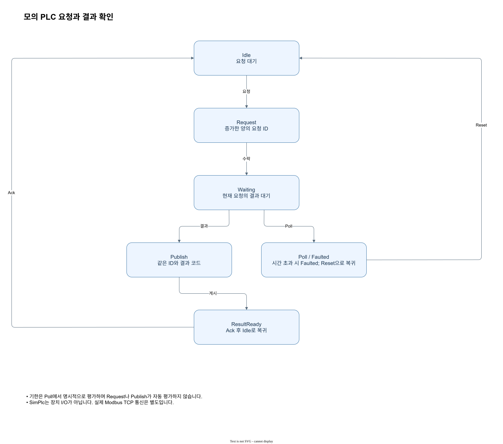

관련 검증 사례
camera-plc 사례는 모의 프레임과 별도의 PLC 요청·게시·확인 흐름을 합성 입력으로 검사합니다. 프레임 부분에서는 제공한 2×2 픽셀이 획득 이미지와 같은지 비교하고, PLC 부분에서는 하나의 요청에 대한 결과 게시와 확인이 통계에 반영되는지 확인합니다. 두 경로는 서로 다른 객체이므로 프레임 수락만으로 PLC 확인이 완료되었다고 판정하지 않습니다.
그림으로 이해하기


검증 기록에는 사용한 trigger mode, frame ID, host 시각과 장치 틱, 큐 용량을 남깁니다. 특히 시간이 역행하거나 트리거가 없을 때의 오류와 정상적인 빈 큐를 따로 시험하면 호출 순서의 문제를 좁힐 수 있습니다. 합성 값으로 이러한 분기와 픽셀 복사 경로를 확인할 수 있지만, 실제 장치 통신·트리거 전기 신호·카메라 시간 보정은 별도의 장비 시험이 필요합니다. 예를 들어 큐 용량을 넘긴 제안은 수락 수와 별개로 기록해 프레임 손실을 드러냅니다.
확인 항목과 실패 분기
camera-plc는 소프트웨어로 공급한 입력을 이용해 프레임 복사와 별도의 요청·게시·확인 과정을 점검합니다. 먼저 카메라에서 얻은 영상 배열이 입력 배열과 같은지 비교하고, 프레임 식별자와 실행 구간이 맞는지 확인합니다. PLC에는 요청 ID를 제출한 뒤 같은 ID로 결과를 게시하고 확인합니다. 두 모의 객체는 독립 상태를 가지므로 카메라의 성공이 PLC의 게시 성공을 대신하지 않습니다.
경계 시험을 덧붙일 때는 새로운 합성 조건과 예상 분기를 별도로 적습니다. 예를 들어 capacity 1을 채운 상태에서 다음 프레임을 제안하면 QueueFull을 살피고, 동일 ID 재제안은 Duplicate를 확인합니다. 유효한 취득 상태의 빈 큐는 None이며, 취득 중이 아닌 상태의 읽기는 오류입니다. 이런 검사는 로직과 소유 경로의 재현을 위한 것이고 실제 전기 트리거나 통신 지연을 측정한 기록과는 구분됩니다.
| 항목 | 조건 또는 값 | 판독 |
|---|---|---|
| 픽셀 | 입력과 수신 비교 | 복사 경로 |
| 프레임 | ID와 epoch 확인 | 실행 구간 |
| PLC | 요청·게시·확인 | 별도 상태 |
| 범위 | 합성 사례 | 장비 성능 미포함 |
관련 검증 사례
관련 API
| 언어 | 종류 | 공개 심볼 | 형식 | 설명 |
|---|---|---|---|---|
| C# | 생성자 | CameraSpec..ctor | CameraSpec(System.UInt64 sourceId, System.UInt64 clockDomain, System.UInt64 tickHz, System.UInt64 capacity, ZVision.TriggerMode triggerMode) | 모의 카메라의 식별자, 시계 및 큐 설정입니다. |
| C# | 구조체 | CameraSpec | | 모의 카메라의 식별자, 시계 및 큐 설정입니다. |
| C# | 필드 | CameraSpec.Capacity | readonly System.UInt64 Capacity | 프레임 및 대기 트리거 큐의 용량으로 1~65536입니다. |
| C# | 필드 | CameraSpec.ClockDomain | readonly System.UInt64 ClockDomain | 0이 아닌 시계 도메인 식별자입니다. |
| C# | 메서드 | CameraSpec.Equals | System.Boolean Equals(System.Object obj) | 설명 미제공 |
| C# | 메서드 | CameraSpec.Equals | static System.Boolean Equals(System.Object objA, System.Object objB) | 설명 미제공 |
| C# | 메서드 | CameraSpec.GetHashCode | System.Int32 GetHashCode() | 설명 미제공 |
| C# | 메서드 | CameraSpec.GetType | System.Type GetType() | 설명 미제공 |
| C# | 메서드 | CameraSpec.ReferenceEquals | static System.Boolean ReferenceEquals(System.Object objA, System.Object objB) | 설명 미제공 |
| C# | 필드 | CameraSpec.SourceId | readonly System.UInt64 SourceId | 0이 아닌 소스 식별자입니다. |
| C# | 필드 | CameraSpec.TickHz | readonly System.UInt64 TickHz | 초당 장치 틱 수입니다. |
| C# | 메서드 | CameraSpec.ToString | System.String ToString() | 설명 미제공 |
| C# | 필드 | CameraSpec.TriggerMode | readonly ZVision.TriggerMode TriggerMode | 모의 카메라에서 프레임과 연결할 트리거 방식을 지정합니다. |
| C# | 생성자 | FrameInfo..ctor | FrameInfo(System.UInt64 sourceId, System.UInt64 epoch, System.UInt64 frameId, System.UInt64 triggerId, System.UInt64 deviceTicks, System.UInt64 hostNs, System.UInt64 clockDomain, System.UInt64 tickHz) | 획득 프레임의 식별자와 시간 정보 스냅샷입니다. |
| C# | 필드 | FrameInfo.ClockDomain | readonly System.UInt64 ClockDomain | 0이 아닌 시계 도메인 식별자입니다. |
| C# | 필드 | FrameInfo.DeviceTicks | readonly System.UInt64 DeviceTicks | 장치 시계의 틱 값입니다. |
| C# | 필드 | FrameInfo.Epoch | readonly System.UInt64 Epoch | 취득 시작 시 증가하는 스트림 세대입니다. |
| C# | 메서드 | FrameInfo.Equals | System.Boolean Equals(System.Object obj) | 설명 미제공 |
| C# | 메서드 | FrameInfo.Equals | static System.Boolean Equals(System.Object objA, System.Object objB) | 설명 미제공 |
| C# | 필드 | FrameInfo.FrameId | readonly System.UInt64 FrameId | 프레임 식별자입니다. |
| C# | 구조체 | FrameInfo | | 획득 프레임의 식별자와 시간 정보 스냅샷입니다. |
| C# | 메서드 | FrameInfo.GetHashCode | System.Int32 GetHashCode() | 설명 미제공 |
| C# | 메서드 | FrameInfo.GetType | System.Type GetType() | 설명 미제공 |
| C# | 필드 | FrameInfo.HostNs | readonly System.UInt64 HostNs | 호출자가 제공한 호스트 시각(나노초)입니다. |
| C# | 메서드 | FrameInfo.ReferenceEquals | static System.Boolean ReferenceEquals(System.Object objA, System.Object objB) | 설명 미제공 |
| C# | 필드 | FrameInfo.SourceId | readonly System.UInt64 SourceId | 0이 아닌 소스 식별자입니다. |
| C# | 필드 | FrameInfo.TickHz | readonly System.UInt64 TickHz | 초당 장치 틱 수입니다. |
| C# | 메서드 | FrameInfo.ToString | System.String ToString() | 설명 미제공 |
| C# | 필드 | FrameInfo.TriggerId | readonly System.UInt64 TriggerId | 연결된 트리거 식별자이며 트리거가 없으면 0입니다. |
| C# | 메서드 | SimulatedCamera.Connect | void Connect() | 연결 해제 상태에서 연결 상태로 전환합니다. |
| C# | 메서드 | SimulatedCamera.Create | static ZVision.SimulatedCamera Create(ZVision.CameraSpec spec) | 설정에 따라 새로운 모의 객체를 만듭니다. 반환 객체는 사용 후 Dispose해야 합니다. |
| C# | 메서드 | SimulatedCamera.Disconnect | void Disconnect() | 연결을 해제하고 대기 프레임과 트리거를 정리합니다. |
| C# | 메서드 | SimulatedCamera.Dispose | void Dispose() | 소유한 네이티브 핸들을 해제합니다. |
| C# | 메서드 | SimulatedCamera.Equals | System.Boolean Equals(System.Object obj) | 설명 미제공 |
| C# | 메서드 | SimulatedCamera.Equals | static System.Boolean Equals(System.Object objA, System.Object objB) | 설명 미제공 |
| C# | 메서드 | SimulatedCamera.ExpireTriggers | System.UInt64 ExpireTriggers(System.UInt64 nowNs, System.UInt64 timeoutNs) | 지정 시간 이상 대기한 트리거를 제거합니다. |
| C# | 메서드 | SimulatedCamera.Fail | void Fail(System.UInt32 code) | 0이 아닌 오류 코드로 모의 카메라를 오류 상태로 전환합니다. |
| C# | 메서드 | SimulatedCamera.GetHashCode | System.Int32 GetHashCode() | 설명 미제공 |
| C# | 메서드 | SimulatedCamera.GetType | System.Type GetType() | 설명 미제공 |
| C# | 프로퍼티 | SimulatedCamera.Info | ZVision.CameraInfo Info { get; } | 현재 정보의 스냅샷을 반환합니다. |
| C# | 메서드 | SimulatedCamera.OfferFrame | ZVision.OfferDisposition OfferFrame(ZVision.ZImage image, System.UInt64 frameId, System.UInt64 deviceTicks, System.UInt64 hostNs, System.UInt64 triggerId = 0) | 취득 중 프레임을 제안합니다. 수락 시 독립 픽셀 복사본을 큐에 넣습니다. |
| C# | 메서드 | SimulatedCamera.Recover | void Recover() | 오류 상태를 연결 상태로 복구합니다. 취득은 별도로 시작해야 합니다. |
| C# | 메서드 | SimulatedCamera.ReferenceEquals | static System.Boolean ReferenceEquals(System.Object objA, System.Object objB) | 설명 미제공 |
| C# | 클래스 | SimulatedCamera | | 호출자가 이벤트를 제공하는 모의 카메라입니다. 실제 장치 연결이나 영상 전송은 수행하지 않습니다. |
| C# | 메서드 | SimulatedCamera.Start | void Start() | 연결 상태에서 취득을 시작하고 새 epoch를 엽니다. |
| C# | 메서드 | SimulatedCamera.Stop | void Stop() | 취득을 중지하고 대기 프레임과 트리거를 정리합니다. |
| C# | 메서드 | SimulatedCamera.ToString | System.String ToString() | 설명 미제공 |
| C# | 메서드 | SimulatedCamera.Trigger | void Trigger(System.UInt64 id, System.UInt64 nowNs) | 취득 중 소프트웨어 또는 외부 트리거를 등록합니다. |
| C# | 메서드 | SimulatedCamera.TryGetFrame | ZVision.AcquiredFrame TryGetFrame() | 취득 큐에서 가장 오래된 프레임을 꺼냅니다. 빈 큐는 null입니다. |
| Python | 클래스 | CameraSpec | (source_id: int, clock_domain: int, tick_hz: int, capacity: int, trigger_mode: zvision._acquisition.TriggerMode) -> None | CameraSpec(source_id: int, clock_domain: int, tick_hz: int, capacity: int, trigger_mode: zvision._acquisition.TriggerMode) |
| Python | 생성자 | CameraSpec.__init__ | CameraSpec(source_id: int, clock_domain: int, tick_hz: int, capacity: int, trigger_mode: zvision._acquisition.TriggerMode) -> None | CameraSpec(source_id: int, clock_domain: int, tick_hz: int, capacity: int, trigger_mode: zvision._acquisition.TriggerMode) |
| Python | 필드 | CameraSpec.capacity | CameraSpec.capacity: int | 프레임과 트리거 큐의 용량이며 1부터 65536까지입니다. |
| Python | 필드 | CameraSpec.clock_domain | CameraSpec.clock_domain: int | 0이 아닌 장치 시계 도메인 식별자입니다. |
| Python | 필드 | CameraSpec.source_id | CameraSpec.source_id: int | 0이 아닌 소스 식별자입니다. |
| Python | 필드 | CameraSpec.tick_hz | CameraSpec.tick_hz: int | 장치 시계의 초당 틱 수이며 양수입니다. |
| Python | 필드 | CameraSpec.trigger_mode | CameraSpec.trigger_mode: TriggerMode | 자유 실행, 소프트웨어 또는 외부 트리거 방식을 선택합니다. |
| Python | 클래스 | FrameInfo | (source_id: int, epoch: int, frame_id: int, trigger_id: int, device_ticks: int, host_ns: int, clock_domain: int, tick_hz: int) -> None | FrameInfo(source_id: int, epoch: int, frame_id: int, trigger_id: int, device_ticks: int, host_ns: int, clock_domain: int, tick_hz: int) |
| Python | 생성자 | FrameInfo.__init__ | FrameInfo(source_id: int, epoch: int, frame_id: int, trigger_id: int, device_ticks: int, host_ns: int, clock_domain: int, tick_hz: int) -> None | FrameInfo(source_id: int, epoch: int, frame_id: int, trigger_id: int, device_ticks: int, host_ns: int, clock_domain: int, tick_hz: int) |
| Python | 필드 | FrameInfo.clock_domain | FrameInfo.clock_domain: int | 장치 시계의 도메인 식별자입니다. |
| Python | 필드 | FrameInfo.device_ticks | FrameInfo.device_ticks: int | 장치 시계의 틱 값입니다. |
| Python | 필드 | FrameInfo.epoch | FrameInfo.epoch: int | 취득 세션을 구분하는 값입니다. |
| Python | 필드 | FrameInfo.frame_id | FrameInfo.frame_id: int | 프레임 식별자입니다. |
| Python | 필드 | FrameInfo.host_ns | FrameInfo.host_ns: int | 호스트 측 시간 값이며 나노초 단위입니다. |
| Python | 필드 | FrameInfo.source_id | FrameInfo.source_id: int | 프레임의 소스 식별자입니다. |
| Python | 필드 | FrameInfo.tick_hz | FrameInfo.tick_hz: int | 장치 시계의 초당 틱 수입니다. |
| Python | 필드 | FrameInfo.trigger_id | FrameInfo.trigger_id: int | 프레임에 연결된 트리거 식별자입니다. |
| Python | 클래스 | SimulatedCamera | () | A deterministic camera simulator, with no device connection. |
| Python | 메서드 | SimulatedCamera.close | (self) | 설명 미제공 |
| Python | 메서드 | SimulatedCamera.connect | (self) | 연결되지 않은 카메라를 연결 상태로 전환합니다. |
| Python | 클래스 메서드 | SimulatedCamera.create | (cls, spec) | 장비 연결 없이 동작하는 결정적 모의 카메라를 만듭니다. |
| Python | 메서드 | SimulatedCamera.disconnect | (self) | 연결을 끊고 대기 중인 프레임과 트리거를 정리합니다. |
| Python | 메서드 | SimulatedCamera.expire_triggers | (self, now_ns, timeout_ns) | 기다린 트리거를 시간 기준으로 만료시킵니다. |
| Python | 메서드 | SimulatedCamera.fail | (self, code) | 연결 또는 취득 상태의 모의 카메라를 오류 상태로 전환합니다. |
| Python | 프로퍼티 | SimulatedCamera.info | SimulatedCamera.info | 현재 정보를 독립 값으로 가져옵니다. |
| Python | 메서드 | SimulatedCamera.offer_frame | (self, image, frame_id, device_ticks, host_ns, trigger_id=0) | 프레임을 모의 취득 큐에 제출합니다. |
| Python | 메서드 | SimulatedCamera.recover | (self) | 오류 상태에서 연결 상태로 복구합니다. |
| Python | 메서드 | SimulatedCamera.start | (self) | 연결 상태에서 취득을 시작하고 새 epoch를 만듭니다. |
| Python | 메서드 | SimulatedCamera.stop | (self) | 취득을 중지하고 대기 중인 프레임과 트리거를 정리합니다. |
| Python | 메서드 | SimulatedCamera.trigger | (self, id, now_ns) | 모의 카메라의 트리거를 등록합니다. |
| Python | 메서드 | SimulatedCamera.try_get_frame | (self) | 큐 앞에서 취득 프레임을 꺼냅니다. |
| Rust | 상수 | CameraSpec.ALIGN | const ALIGN: usize | The alignment of pointer. |
| Rust | 구조체 | CameraSpec | pub struct CameraSpec { pub source_id: u64, pub clock_domain: u64, pub tick_hz: u64, pub capacity: usize, pub trigger_mode: TriggerMode, } | 설명 미제공 |
| Rust | 연관 타입 | CameraSpec.Error | type Error = <U as TryFrom<T>>::Error | The type returned in the event of a conversion error. |
| Rust | 연관 타입 | CameraSpec.Error-1 | type Error = Infallible | The type returned in the event of a conversion error. |
| Rust | 연관 타입 | CameraSpec.Init | type Init = T | The type for initializers. |
| Rust | 연관 타입 | CameraSpec.Owned | type Owned = T | The resulting type after obtaining ownership. |
| Rust | 메서드 | CameraSpec.borrow | fn borrow(&self) -> &T | Immutably borrows from an owned value. Read more |
| Rust | 메서드 | CameraSpec.borrow_mut | fn borrow_mut(&mut self) -> &mut T | Mutably borrows from an owned value. Read more |
| Rust | 필드 | CameraSpec.capacity | capacity: usize | 설명 미제공 |
| Rust | 필드 | CameraSpec.clock_domain | clock_domain: u64 | 설명 미제공 |
| Rust | 메서드 | CameraSpec.clone | fn clone(&self) -> CameraSpec | Returns a copy of the value. Read more |
| Rust | 메서드 | CameraSpec.clone_from | fn clone_from(&mut self, source: &Self) | Performs copy-assignment from source. Read more |
| Rust | 메서드 | CameraSpec.clone_into | fn clone_into(&self, target: &mut T) | Uses borrowed data to replace owned data, usually by cloning. Read more |
| Rust | 메서드 | CameraSpec.clone_to_uninit | unsafe fn clone_to_uninit(&self, dst: *mut u8) | Performs copy-assignment from self to dst. Read more |
| Rust | 메서드 | CameraSpec.deref | unsafe fn deref<'a>(ptr: usize) -> &'a T | Dereferences the given pointer. Read more |
| Rust | 메서드 | CameraSpec.deref_mut | unsafe fn deref_mut<'a>(ptr: usize) -> &'a mut T | Mutably dereferences the given pointer. Read more |
| Rust | 메서드 | CameraSpec.drop | unsafe fn drop(ptr: usize) | Drops the object pointed to by the given pointer. Read more |
| Rust | 메서드 | CameraSpec.eq | fn eq(&self, other: &CameraSpec) -> bool | Tests for self and other values to be equal, and is used by ==. |
| Rust | 메서드 | CameraSpec.fmt | fn fmt(&self, f: &mut Formatter<'_>) -> Result<(), Error> | Formats the value using the given formatter. Read more |
| Rust | 메서드 | CameraSpec.from | fn from(t: T) -> T | Returns the argument unchanged. |
| Rust | 메서드 | CameraSpec.init | unsafe fn init(init: <T as Pointable>::Init) -> usize | Initializes a with the given initializer. Read more |
| Rust | 메서드 | CameraSpec.into | fn into(self) -> U | Calls U::from(self). That is, this conversion is whatever the implementation of From<T> for U chooses to do. |
| Rust | 메서드 | CameraSpec.into_either | fn into_either(self, into_left: bool) -> Either<Self, Self> | Converts self into a Left variant of Either<Self, Self> if into_left is true. Converts self into a Right variant of Either<Self, Self> otherwise. Read more |
| Rust | 메서드 | CameraSpec.into_either_with | fn into_either_with<F>(self, into_left: F) -> Either<Self, Self>where F: FnOnce(&Self) -> bool, | Converts self into a Left variant of Either<Self, Self> if into_left(&self) returns true. Converts self into a Right variant of Either<Self, Self> otherwise. Read more |
| Rust | 메서드 | CameraSpec.ne | fn ne(&self, other: &Rhs) -> bool | Tests for !=. The default implementation is almost always sufficient, and should not be overridden without very good reason. |
| Rust | 필드 | CameraSpec.source_id | source_id: u64 | 설명 미제공 |
| Rust | 필드 | CameraSpec.tick_hz | tick_hz: u64 | 설명 미제공 |
| Rust | 메서드 | CameraSpec.to_owned | fn to_owned(&self) -> T | Creates owned data from borrowed data, usually by cloning. Read more |
| Rust | 필드 | CameraSpec.trigger_mode | trigger_mode: TriggerMode | 설명 미제공 |
| Rust | 메서드 | CameraSpec.try_from | fn try_from(value: U) -> Result<T, <T as TryFrom<U>>::Error> | Performs the conversion. |
| Rust | 메서드 | CameraSpec.try_into | fn try_into(self) -> Result<U, <U as TryFrom<T>>::Error> | Performs the conversion. |
| Rust | 메서드 | CameraSpec.type_id | fn type_id(&self) -> TypeId | Gets the TypeId of self. Read more |
| Rust | 상수 | FrameInfo.ALIGN | const ALIGN: usize | The alignment of pointer. |
| Rust | 연관 타입 | FrameInfo.Error | type Error = <U as TryFrom<T>>::Error | The type returned in the event of a conversion error. |
| Rust | 연관 타입 | FrameInfo.Error-1 | type Error = Infallible | The type returned in the event of a conversion error. |
| Rust | 구조체 | FrameInfo | pub struct FrameInfo { pub source_id: u64, pub epoch: u64, pub frame_id: u64, pub trigger_id: u64, pub device_ticks: u64, pub host_ns: u64, pub clock_domain: u64, pub tick_hz: u64, } | 설명 미제공 |
| Rust | 연관 타입 | FrameInfo.Init | type Init = T | The type for initializers. |
| Rust | 연관 타입 | FrameInfo.Owned | type Owned = T | The resulting type after obtaining ownership. |
| Rust | 메서드 | FrameInfo.borrow | fn borrow(&self) -> &T | Immutably borrows from an owned value. Read more |
| Rust | 메서드 | FrameInfo.borrow_mut | fn borrow_mut(&mut self) -> &mut T | Mutably borrows from an owned value. Read more |
| Rust | 필드 | FrameInfo.clock_domain | clock_domain: u64 | 설명 미제공 |
| Rust | 메서드 | FrameInfo.clone | fn clone(&self) -> FrameInfo | Returns a copy of the value. Read more |
| Rust | 메서드 | FrameInfo.clone_from | fn clone_from(&mut self, source: &Self) | Performs copy-assignment from source. Read more |
| Rust | 메서드 | FrameInfo.clone_into | fn clone_into(&self, target: &mut T) | Uses borrowed data to replace owned data, usually by cloning. Read more |
| Rust | 메서드 | FrameInfo.clone_to_uninit | unsafe fn clone_to_uninit(&self, dst: *mut u8) | Performs copy-assignment from self to dst. Read more |
| Rust | 메서드 | FrameInfo.deref | unsafe fn deref<'a>(ptr: usize) -> &'a T | Dereferences the given pointer. Read more |
| Rust | 메서드 | FrameInfo.deref_mut | unsafe fn deref_mut<'a>(ptr: usize) -> &'a mut T | Mutably dereferences the given pointer. Read more |
| Rust | 필드 | FrameInfo.device_ticks | device_ticks: u64 | 설명 미제공 |
| Rust | 메서드 | FrameInfo.drop | unsafe fn drop(ptr: usize) | Drops the object pointed to by the given pointer. Read more |
| Rust | 필드 | FrameInfo.epoch | epoch: u64 | 설명 미제공 |
| Rust | 메서드 | FrameInfo.eq | fn eq(&self, other: &FrameInfo) -> bool | Tests for self and other values to be equal, and is used by ==. |
| Rust | 메서드 | FrameInfo.fmt | fn fmt(&self, f: &mut Formatter<'_>) -> Result<(), Error> | Formats the value using the given formatter. Read more |
| Rust | 필드 | FrameInfo.frame_id | frame_id: u64 | 설명 미제공 |
| Rust | 메서드 | FrameInfo.from | fn from(t: T) -> T | Returns the argument unchanged. |
| Rust | 필드 | FrameInfo.host_ns | host_ns: u64 | 설명 미제공 |
| Rust | 메서드 | FrameInfo.init | unsafe fn init(init: <T as Pointable>::Init) -> usize | Initializes a with the given initializer. Read more |
| Rust | 메서드 | FrameInfo.into | fn into(self) -> U | Calls U::from(self). That is, this conversion is whatever the implementation of From<T> for U chooses to do. |
| Rust | 메서드 | FrameInfo.into_either | fn into_either(self, into_left: bool) -> Either<Self, Self> | Converts self into a Left variant of Either<Self, Self> if into_left is true. Converts self into a Right variant of Either<Self, Self> otherwise. Read more |
| Rust | 메서드 | FrameInfo.into_either_with | fn into_either_with<F>(self, into_left: F) -> Either<Self, Self>where F: FnOnce(&Self) -> bool, | Converts self into a Left variant of Either<Self, Self> if into_left(&self) returns true. Converts self into a Right variant of Either<Self, Self> otherwise. Read more |
| Rust | 메서드 | FrameInfo.ne | fn ne(&self, other: &Rhs) -> bool | Tests for !=. The default implementation is almost always sufficient, and should not be overridden without very good reason. |
| Rust | 필드 | FrameInfo.source_id | source_id: u64 | 설명 미제공 |
| Rust | 필드 | FrameInfo.tick_hz | tick_hz: u64 | 설명 미제공 |
| Rust | 메서드 | FrameInfo.to_owned | fn to_owned(&self) -> T | Creates owned data from borrowed data, usually by cloning. Read more |
| Rust | 필드 | FrameInfo.trigger_id | trigger_id: u64 | 설명 미제공 |
| Rust | 메서드 | FrameInfo.try_from | fn try_from(value: U) -> Result<T, <T as TryFrom<U>>::Error> | Performs the conversion. |
| Rust | 메서드 | FrameInfo.try_into | fn try_into(self) -> Result<U, <U as TryFrom<T>>::Error> | Performs the conversion. |
| Rust | 메서드 | FrameInfo.type_id | fn type_id(&self) -> TypeId | Gets the TypeId of self. Read more |
| Rust | 상수 | SimulatedCamera.ALIGN | const ALIGN: usize | The alignment of pointer. |
| Rust | 연관 타입 | SimulatedCamera.Error | type Error = <U as TryFrom<T>>::Error | The type returned in the event of a conversion error. |
| Rust | 연관 타입 | SimulatedCamera.Error-1 | type Error = Infallible | The type returned in the event of a conversion error. |
| Rust | 연관 타입 | SimulatedCamera.Init | type Init = T | The type for initializers. |
| Rust | 연관 타입 | SimulatedCamera.Owned | type Owned = T | The resulting type after obtaining ownership. |
| Rust | 구조체 | SimulatedCamera | pub struct SimulatedCamera { /* private fields */ } | Existing deterministic simulator with a facade-image boundary. |
| Rust | 연관 타입 | SimulatedCamera.Target | type Target = SimCamera | Corresponding engine representation. |
| Rust | 연관 타입 | SimulatedCamera.Target-1 | type Target = SimCamera | Corresponding engine representation. |
| Rust | 메서드 | SimulatedCamera.borrow | fn borrow(&self) -> &T | Immutably borrows from an owned value. Read more |
| Rust | 메서드 | SimulatedCamera.borrow_mut | fn borrow_mut(&mut self) -> &mut T | Mutably borrows from an owned value. Read more |
| Rust | 메서드 | SimulatedCamera.clone | fn clone(&self) -> SimulatedCamera | Returns a copy of the value. Read more |
| Rust | 메서드 | SimulatedCamera.clone_from | fn clone_from(&mut self, source: &Self) | Performs copy-assignment from source. Read more |
| Rust | 메서드 | SimulatedCamera.clone_into | fn clone_into(&self, target: &mut T) | Uses borrowed data to replace owned data, usually by cloning. Read more |
| Rust | 메서드 | SimulatedCamera.clone_to_uninit | unsafe fn clone_to_uninit(&self, dst: *mut u8) | Performs copy-assignment from self to dst. Read more |
| Rust | 메서드 | SimulatedCamera.connect | pub fn connect(&mut self) -> ZResult<()> | 설명 미제공 |
| Rust | 메서드 | SimulatedCamera.deref | unsafe fn deref<'a>(ptr: usize) -> &'a T | Dereferences the given pointer. Read more |
| Rust | 메서드 | SimulatedCamera.deref_mut | unsafe fn deref_mut<'a>(ptr: usize) -> &'a mut T | Mutably dereferences the given pointer. Read more |
| Rust | 메서드 | SimulatedCamera.disconnect | pub fn disconnect(&mut self) -> ZResult<()> | 설명 미제공 |
| Rust | 메서드 | SimulatedCamera.drop | unsafe fn drop(ptr: usize) | Drops the object pointed to by the given pointer. Read more |
| Rust | 메서드 | SimulatedCamera.expire_triggers | pub fn expire_triggers(&mut self, now_ns: u64, timeout_ns: u64) -> ZResult<u64> | 설명 미제공 |
| Rust | 메서드 | SimulatedCamera.fail | pub fn fail(&mut self, code: u32) -> ZResult<()> | 설명 미제공 |
| Rust | 메서드 | SimulatedCamera.fmt | fn fmt(&self, f: &mut Formatter<'_>) -> Result | Formats the value using the given formatter. Read more |
| Rust | 메서드 | SimulatedCamera.from | fn from(t: T) -> T | Returns the argument unchanged. |
| Rust | 메서드 | SimulatedCamera.from_engine | fn from_engine(inner: SimCamera) -> Self | Wrap an existing simulator by transferring ownership. |
| Rust | 메서드 | SimulatedCamera.info | pub fn info(&self) -> CameraInfo | 설명 미제공 |
| Rust | 메서드 | SimulatedCamera.init | unsafe fn init(init: <T as Pointable>::Init) -> usize | Initializes a with the given initializer. Read more |
| Rust | 메서드 | SimulatedCamera.into | fn into(self) -> U | Calls U::from(self). That is, this conversion is whatever the implementation of From<T> for U chooses to do. |
| Rust | 메서드 | SimulatedCamera.into_either | fn into_either(self, into_left: bool) -> Either<Self, Self> | Converts self into a Left variant of Either<Self, Self> if into_left is true. Converts self into a Right variant of Either<Self, Self> otherwise. Read more |
| Rust | 메서드 | SimulatedCamera.into_either_with | fn into_either_with<F>(self, into_left: F) -> Either<Self, Self>where F: FnOnce(&Self) -> bool, | Converts self into a Left variant of Either<Self, Self> if into_left(&self) returns true. Converts self into a Right variant of Either<Self, Self> otherwise. Read more |
| Rust | 메서드 | SimulatedCamera.into_engine | fn into_engine(self) -> SimCamera | Transfer the simulator without changing its state. |
| Rust | 메서드 | SimulatedCamera.new | pub fn new(spec: CameraSpec) -> ZResult<Self> | 설명 미제공 |
| Rust | 메서드 | SimulatedCamera.offer | pub fn offer( &mut self, image: &ZImage, frame_id: u64, device_ticks: u64, host_ns: u64, trigger_id: u64, ) -> ZResult<OfferDisposition> | Legacy spelling retained through the 0.1.x series. |
| Rust | 메서드 | SimulatedCamera.offer_frame | pub fn offer_frame( &mut self, image: &ZImage, frame_id: u64, device_ticks: u64, host_ns: u64, trigger_id: u64, ) -> ZResult<OfferDisposition> | Offer a visible image. The simulator copies it into an independent frame. |
| Rust | 메서드 | SimulatedCamera.recover | pub fn recover(&mut self) -> ZResult<()> | 설명 미제공 |
| Rust | 메서드 | SimulatedCamera.start | pub fn start(&mut self) -> ZResult<()> | 설명 미제공 |
| Rust | 메서드 | SimulatedCamera.stop | pub fn stop(&mut self) -> ZResult<()> | 설명 미제공 |
| Rust | 메서드 | SimulatedCamera.to_owned | fn to_owned(&self) -> T | Creates owned data from borrowed data, usually by cloning. Read more |
| Rust | 메서드 | SimulatedCamera.trigger | pub fn trigger(&mut self, id: u64, now_ns: u64) -> ZResult<()> | 설명 미제공 |
| Rust | 메서드 | SimulatedCamera.try_from | fn try_from(value: U) -> Result<T, <T as TryFrom<U>>::Error> | Performs the conversion. |
| Rust | 메서드 | SimulatedCamera.try_get_frame | pub fn try_get_frame(&mut self) -> ZResult<Option<AcquiredFrame>> | 설명 미제공 |
| Rust | 메서드 | SimulatedCamera.try_into | fn try_into(self) -> Result<U, <U as TryFrom<T>>::Error> | Performs the conversion. |
| Rust | 메서드 | SimulatedCamera.type_id | fn type_id(&self) -> TypeId | Gets the TypeId of self. Read more |